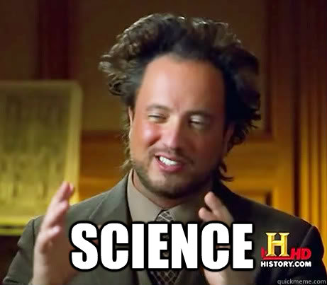
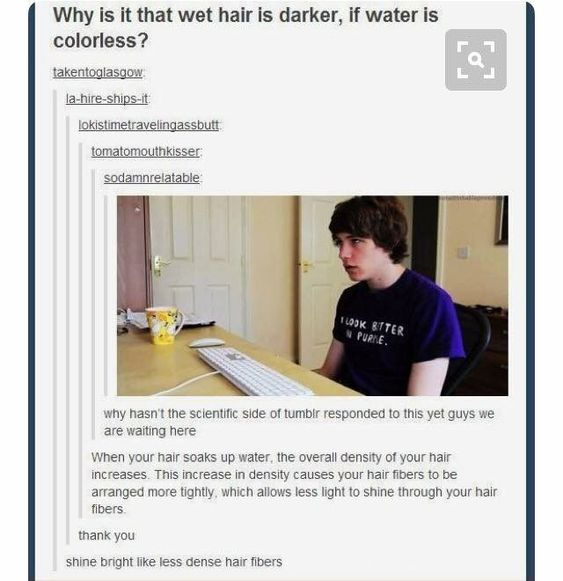
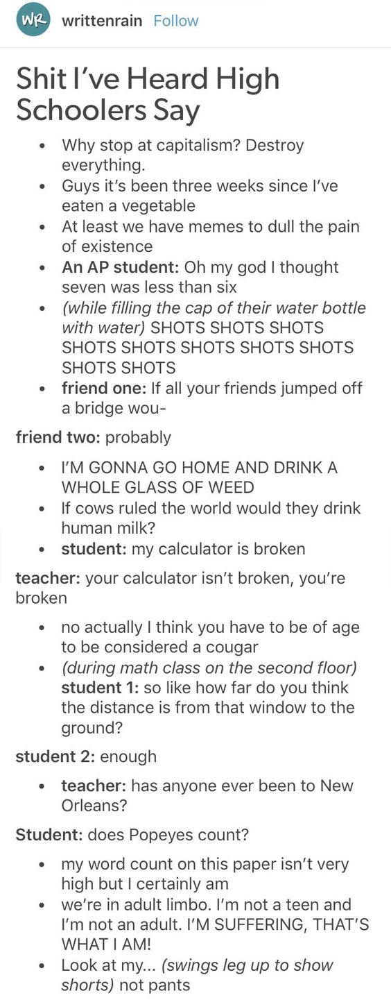

La ciencia y la motivación
La comunidad de Tumblr es muy extensa. Tanto, que hay usuarios adolescentes y adultos profesionales, todos compartiendo el sitio. Este último dato para entender otro lado de Tumblr: el lado científico.
A menudo los usuarios hacen una pregunta con la siguiente frase: "Cience of Tumblr, try to explain this" o "Why hasn't the scientific side of Tumblr answered/responded this?".
También hay profesores que publican cosas que han escuchado decir a los alumnos, o cosas que han sucedido en los exámenes. Esta sección usualmente es complementada por otros estudiantes usuarios de Tumblr.
 Además del lado científico de Tumblr, existe el lado motivacional. Tumblr está lleno de posts motivadores, para todas aquellas personas que lo necesiten, ya que es bien conocido por ser una vía de desahogo de personas con depresión y/o ansiedad. No todos los usuarios son así, pero hay varios que sí, por eso mismo me gusta recalcar que existe otra cara muy bonita del sitio: la del apoyo.
En Tumblr todos son muy libres, solo te juzgan si sos mala persona. ¿Sos gay, lesbiana, asexual, demisexual, bisexual, mujer, hombre, género neutro? ¿Te gusta un libro que nadie conoce? ¿Te gustan las sagas populares? ¿Te gusta la fotografía? ¿Que tal el helado de menta granizada? Nada de eso importa realmente si sos una buena persona. Expresate como te quieras expresar, siempre y cuando no sea dañino. Los usuarios te motivan, te apoyan, y se aseguran de recordar que está bien que seas así, que no estás solo.
A veces se publican posts algo tristes, pero siempre hay alguien que se lo da vuelta y lo vuelve un cumplido. Creo que es un muy lindo detalle de su parte.